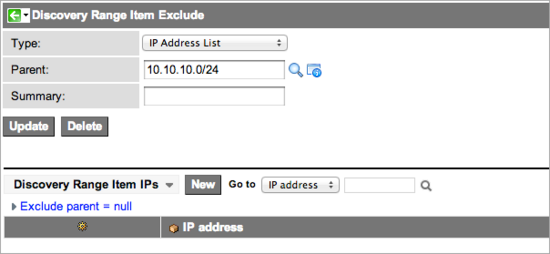

Discovery Schedules
| |
Note: This article applies to Fuji and earlier releases. For more current information, see Discovery Schedules at http://docs.servicenow.com
The ServiceNow Wiki is no longer being updated. Visit http://docs.servicenow.com for the latest product documentation. |
Contents
1 Overview
A discovery schedule is the starting point for all discovery activities. The schedule determines what is going to be discovered, the day and time when it will be discovered, and the MID Servers that will perform the discovery.
Use the Discovery Schedule module to:
- Configure device identification by IP address or other identifiers.
- Determine if credentials will be used in device probes.
- Name the MID Server to use for a particular type of discovery.
- Create or disable a schedule that controls when the discovery runs in your network.
- Configure the use of multiple Shazzam probes for load balancing (available starting with the Eureka release).
- Configure the use of multiple MID Servers for load balancing.
- Run a discovery manually.
See Create a Discovery Schedule for information on how to configure a discovery to run.
2 Prerequisites
Before you create a schedule, configure the following:
- MID Servers: Install and configure one or more MID Servers.
- Credentials: Provide the MID Servers with the login credentials they need to query the devices in the network.
- Classifications: Make sure the device and process classifications provided in the base platform are sufficient. If not, you may need to create new classifications as needed for the devices, processes, and applications in the network.
3 Configuring IP Addresses
Use one or more of these methods in any combination to define the network or network segment for Discovery to query:
- IP address list
- IP address range
- IP network
- Quick Ranges
- Discover Now
| |
Note: If you do not know the IP addresses in the network, run network discovery first to determine the IP networks. Then, convert the IP networks into IP address range sets. |
3.1 IP Address List
Use IP address lists to add individual addresses for Discovery to query. These addresses should not be included in any existing IP range or IP network. You can enter the IP address of the device or a host name (DNS name). If you enter a host name, it must be resolvable from the MID Server system.
3.2 IP Address Range
You can define arbitrary ranges of IP addresses for Discovery to query. This is a good way to include selected segments of a network or subnet, but Discovery has no way of knowing if the IP range includes addresses for private networks or broadcast addresses, and so must ping all the addresses in the range. If the network and broadcast addresses are included, then the results are inaccurate. For this reason, discoveries configured to detect IP networks are generally more accurate than those configured for IP address ranges. ServiceNow recommends that any IP address range only includes IP addresses reserved for manageable devices on the public network.
3.3 IP Network
An IP network includes the range of available IP addresses in that network, including the network address (the lowest address in the range) and the broadcast address (the highest address in the range). An example of a class C network range is 192.168.0.0 to 192.168.0.255. In the Range Set form, this network can be entered with either of the following notations:
- 192.168.0.0/24
- 192.168.0.1/255.255.255.0
This notation indicates that Discovery is scanning an IP network, and Discovery does not scan the highest and lowest numbers in the range. This prevents significant errors from being introduced into the Discovery data by the broadcast address, which returns all the devices in the network, and the network address, which can add an arbitrary number of redundant devices. This built-in control makes IP networks the best method of defining which IP address ranges to query.
3.4 Quick Ranges
Quick ranges allow administrators to define IP addresses to scan in a single comma-delimited string without creating separate records. You can enter IP addresses in one of the following formats:
- An IP range defined by a slash and the number of bits in the subnetwork. For example, the string 10.10.10.0/24 scans 24 bits of IP addresses from 10.10.10.0 to 10.10.10.254.
- An IP range defined by a dash. For example, the string 10.10.11.0-10.10.11.165 scans the IP addresses from 10.10.11.0 to 10.10.11.165.
- A comma-separated list of specific IP addresses. For example the string 10.10.11.200,10.10.11.235 scans the IP addresses 10.10.11.200 and 10.10.11.235.
To create quick ranges:
- Click the Quick Ranges related link on the Discovery Schedule form.
- Enter the IP networks, IP ranges, and specific IP addresses to scan.
- Click Make Ranges.
| |
Note: The Quick Range interface is for entering IP addresses only and cannot be used to edit IP addresses that have already been submitted. |
{kind=link}
The instance automatically displays the entries in the proper format. To make any changes to IP address ranges, select the IP address records.
{kind=link}
3.5 Discover Now
Discover Now allows you to manually run a Discovery schedule. Manually running a schedule record does not affect the schedule. It continues to run as configured, despite manual execution.
- Navigate to Discovery > Discovery Schedules.
- Select the schedule you want to manually run.
- From Related links, click Discover now.
3.6 Excluding IP Addresses
Administrators can exclude specific IP addresses in a range or network from a Discovery Schedule. For example, you might exclude a subnet containing devices restricted from interacting with other devices or exclude a device with an intentionally unorthodox configuration that causes an authentication issue each time it is discovered.
To exclude an IP address:
- In the Discovery Schedule form, click the link for the Type of IP address range that contains the address to exclude. For example, to exclude 10.10.10.28, select the IP Network for 10.10.10.0/24, which is the range of IP addresses that contains the target address.
- In the Discovery Range Item Excludes related list, click New.
- In the Discovery Range Item Exclude form, select a Type for the excluded IPs. For example, select IP Address List to exclude a single IP address or multiple IP addresses that are not sequential.
- Right-click the header bar and select Save from the context menu.
- The Discovery Range Item IPs related list appears.
- 
- Click New in this list.
- An entry form for the IP addresses to exclude appears.
- Enter the IP address to exclude, and then click Submit.
- Click Update to save the excluded address and return to the Discovery Schedule.
{kind=link}
{kind=link}
{kind=link}
{kind=link}
{kind=link}
4 Enhancements
4.1 Eureka
- Supports clustering of Shazzam probes across multiple MID Servers for improved performance.